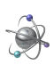

Latest News
- February 10, 2012
- 삼성탈레스 통신연구소와 공동으로 추진하는 OOOO부대 위성OOO 프로젝트 수행을 완료하였습니다.
- April 10, 2012
- KT 위성통신 체계 고도화 프로젝트를 진행중에 있습니다.
- March 1, 2012
- 김포공항등화관제제어 시스템(ILCMS) 구축사업을 수주하여 진행 중에 있습니다.
- July 5, 2011
- 삼성탈레스 통신연구소와 공동으로 국방과학연구소(ADD)의 위성OOO 프로젝트 연구개발 사업을 진행 중에 있습니다.
Welcome to TACHYONS Corporation!
(주)타키온스 홈페이지에 오신 것을 환영합니다. 2012년 새롭게 약진하며 내실을 기하는 도약의 해로 삼고 홈페이지를 새롭게 단장하였습니다.
또한 CI에 대한 리뉴얼 등의 작업도 진행하여 회사의 면모를 재단장하였습니다. 그리고 그와 함께 그간 대기업연구소의 공동수행 사업만을 수행하는 단계에서 자체 제품개발 단계로 나아가는 내부 작업도 진행하고있습니다. 이에 맞게 사업영역에 대한 집중화작업도 동시에 진행중이며 지금도 이를 바탕으로 향상된 "기술적 신용"을 제공하는 업체를 만들어 내기 위한 타키온스 임직원들의 노력은 계속되고 있습니다.
현재 제공되는 홈페이지의 컨텐츠는 다음과 같습니다: Home, About us, Services, Products, Contacts.Recent & Comming-up Items
-

White Papers
(주)타키온스가 제공해드리는 기술 서비스 영역 내의 기술문서를 제공합니다. 관계사 및 고객사 분들에게 타키온스의 기술을 알리고자 마련한 콘텐츠입니다. 당사의 핵심 기술서비스 분야에 대한 자료를 전달해드립니다. -
고객게시판
(주)타키온스의 제품 및 서비스 브로셔 자료입니다. 고객사 분들에게 제품 및 서비스에 대한 자료를 제공하고자 제작 되었습니다. 제품과 서비스에 대한 문의는 당사 대표 이메일이나 연락처로 문의 바랍니다.